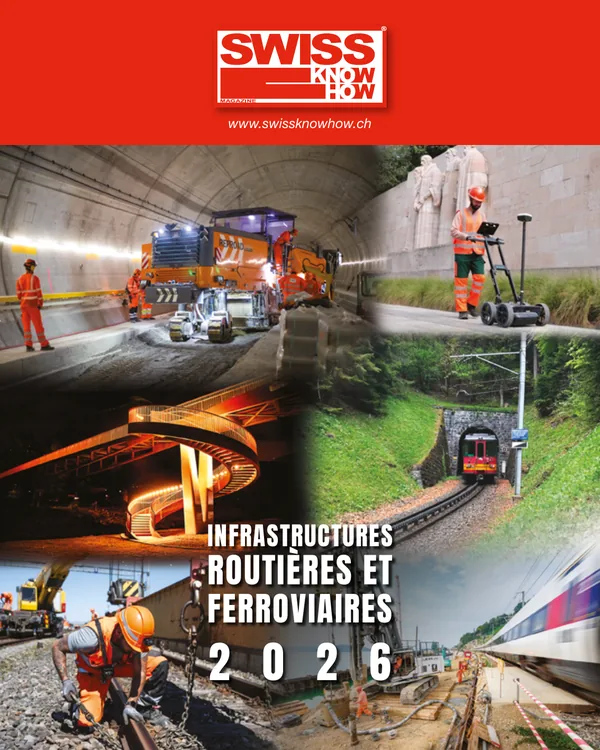

« Nos forces résident dans notre grande polyvalence, ainsi que dans l’appui d’un grand groupe. »— Thomas Streiff
Texte intégral
Le groupe Colas Suisse mise sur l’innovation et la réutilisation des matériaux issus directement des chantiers pour construire des routes plus durables. Produits biosourcés, process décarbonés et circuits courts : une stratégie alignée sur les objectifs climatiques du groupe international.
Spécialiste de la construction et de l’entretien des infrastructures routières, le groupe Colas Suisse réunit en interne l’ensemble des compétences nécessaires à la réalisation d’une chaussée routière. L’entreprise, entièrement verticalisée, prend en charge toutes les étapes des chantiers : de la préparation à la finition, en passant par la fabrication et la mise en œuvre des matériaux de structure de chaussée. Elle dispose notamment des carrières indispensables à la production des granulats, parmi lesquelles les célèbres carrières d’Arvel, situées à Villeneuve.
Le groupe Colas possède et exploite également deux centrales d’enrobés, à Genève et dans le Jura, permettant d’approvisionner les chantiers au plus près, partout en Suisse romande. Enfin, la société s’appuie sur des équipes spécialisées capables de poser les enrobés sur des surfaces variées et exigeantes.
Comme le souligne le directeur du Business & Development du groupe Colas Suisse, Thomas Streiff : « Nos forces résident dans notre grande polyvalence, ainsi que dans l’appui d’un grand groupe (Ndlr : Colas SA), ce qui nous permet de proposer des solutions toujours plus innovantes et respectueuses de l’environnement. »
La réduction de l’impact environnemental, engagement soutenu par le groupe international, constitue une priorité pour Colas Suisse. Dans un contexte où les atteintes au paysage suscitent de plus en plus de contestations, la recherche de solutions pour des infrastructures de mobilité durables s’impose comme un enjeu majeur.
Pour le groupe Colas à l’échelle internationale, cet engagement se traduit d’abord par l’innovation produit. Le Core Center, premier laboratoire privé de R&D situé en région parisienne, conçoit et développe des produits et techniques répondant aux enjeux de la transition énergétique et aux nouveaux usages. Pôle R&D du groupe à disposition des entités de chaque pays, il élabore des formulations novatrices, comme le revêtement Vegecol : un enrobé clair, esthétique, sans bitume ni solvant, fabriqué à partir de liants végétaux. Il permet de réduire jusqu’à 70 % l’empreinte carbone par rapport à un enrobé traditionnel grâce à sa température de fabrication moins élevée qu’un revêtement classique.
L’engagement du groupe Colas se manifeste également à travers ses processus. L’entreprise a ainsi mis au point Recycol, un procédé de recyclage en place des revêtements de chaussées qui permet de réutiliser la totalité des matériaux existants, sans transport ni apport extérieur de nouveaux granulats. Ce procédé est plutôt adapté actuellement aux voies à faible trafic.
Mais le recyclage de matériaux peut s’appliquer à des routes plus fréquentées, y compris aux autoroutes. « Lors du chantier OFROU sur l’A1, entre Vernier et le Grand-Saconnex, nous avons ainsi réutilisé 50 % de matériaux recyclés directement dans la couche de fondation de la nouvelle chaussée », explique Thomas Streiff. Un taux qui pourrait à l’avenir être encore augmenté et élargi aux couches de roulement, comme cela se pratique déjà en France, tout en garantissant la qualité et la durabilité de l’infrastructure.
Parmi les autres démarches visant à améliorer le bilan carbone : la rationalisation des transports, le développement des circuits courts ou encore l’utilisation de panneaux solaires pour chauffer les cuves de bitume des centrales d’enrobage sont entre autres pratiqués par l’entreprise.
Car l’objectif est ambitieux : Colas international s’est engagé à réduire d’ici à 2030 de 46,5 % ses émissions directes de gaz à effet de serre, ainsi que de 30 % ses émissions indirectes en amont, par rapport à l’année de référence 2019.
Grandir et se diversifier
Depuis le début des années 2000, le groupe Colas a entamé en Suisse une stratégie de croissance basée sur des acquisitions d’entreprises. La holding Colas Suisse Holding SA possède ainsi désormais onze marques différentes, dans divers domaines de la construction et du gros œuvre. Chacune de ces entreprises a gardé sa propre identité pour rester au plus proche de ses clients, tout en bénéficiant aujourd’hui de la force et des synergies du groupe.
Au fil de ces acquisitions, Colas Suisse Holding SA a non seulement grandi, mais également largement diversifié ses secteurs d’activités. Dès lors, le groupe emploie environ 850 personnes, principalement en Suisse romande. La volonté du groupe s’oriente désormais vers la percée du marché Suisse alémanique. Un premier pas dans cette direction a été réalisé avec le rachat en mai 2025 de l’entreprise biennoise De Luca, dont l’identité bilingue permet de créer le lien avec la partie germanophone du pays.
Une histoire internationale débutée à Genève
Le groupe Colas Suisse a été créée à Satigny (GE) en 1927 autour d’un principe technique innovant permettant l’émulsification du bitume et sa pose à froid, le Cold Asphalt, qui a donné son nom à la société. L’entreprise est devenue un groupe international dès 1929, basé à Paris. Colas International a depuis multiplié ses implantations sur les cinq continents. Au fil des décennies, le groupe a aussi élargi sa palette de savoir-faire en intégrant des métiers complémentaires à la route, principalement les matériaux de construction et, au tournant des années 2000, dans le domaine ferroviaire.
En 1986, le groupe Bouygues est entré au capital de l’entreprise comme actionnaire principal et a pris l’entier de l’actionnariat il y a deux ans. Aujourd’hui, Colas international est présent dans plus de 50 pays et emploie près de 65 000 personnes. L'entreprise réalise chaque année environ 100 000 chantiers pour environ 16 mia d’Euros de chiffre d’affaires.
Texte paru dans Swiss Knowhow – Infrastructures routières et ferroviaires 2026, p. 16-17, tel que publié dans l'édition imprimée. En cas d'écart, la version imprimée fait foi.
Personnes citées
- Thomas StreiffDirecteur Business & Development

Paru dans
Swiss Knowhow – Infrastructures routières et ferroviaires 2026
2026 · page 16-17 · article original en français
Signaler une erreur Lire l'article complet PDF